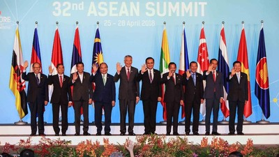
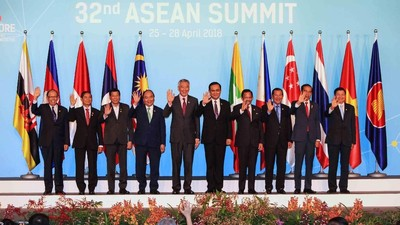
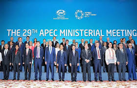
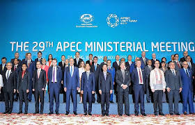
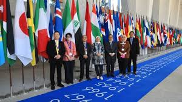
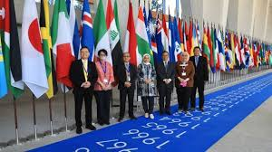

 

 


IJEPA merupakan perjanjian antara Indonesia dan Jepang yang diadakan sejak tahun 2007, perjanjian ini memiliki 3 pilar utama yaitu liberasi, fasilitasi dan peningkatan kapasitas. Indonesia memutuskan untuk membuat perjanjian ini dengan Jepang demi meningkatkan kegiatan impor, ekspor, dan investasi di kedua negara, terkhususnya tentunya di Indonesia sendiri.
Selain itu investasi Jepang yang ada di Indonesia naik dengan signifikan dari 2,6% pada tahun 2000 sampai dengan tahun 2008 hingga menjadi 28,9% pada tahun 2009 sampai pada dengan tahun 2017 kemarin. Kegiatan impor ekspor dari kedua negara juga naik dengan signifikan serta membuka banyak lapangan kerja, perkembangan industri pendukung, dan yang pastinya pertumbuhan ekonomi yang akan meningkatkan daya beli masyarakat
Dengan Indonesia mengikuti kerja sama berupa ASEAN bersama dengan negara - negara di Asia Tenggara, perdagangan internasional Indonesia ditingkatkan secara signifikan. Dengan akses pasar luas yang diberikan oleh ASEAN, Indonesia dapat lebih menyebarluaskan produk - produk dalam negerinya, hal ini membantu membuka lapangan kerja di Indonesia dan yang pastinya meningkatkan kebaikan ekonomi negara kita.
Kerja sama Indonesia dengan APEC membawa hal yang mirip seperti yang telah dibawa oleh ASEAN. APEC membantu Indonesia dalam meningkatkan perdagangan, lebih khususnya lagi dalam investasi, dan kerja sama ekonomi bersama negara - negara anggota yang lainnya. APEC juga merupakan kunci dalam kepentingan ekonomi, APEC memberikan akses pasar yang besar dan peluang investasi yang memiliki banyak potensial.
Dengan kerjasamanya bersama EU Indonesia dapat memperoleh banyak dampak positif seperti perluasan akses pasar dan perdagangan, daya saing bagi produk pertanian, perikanan, industri bahkan kehutanan, dan tenaga kerja di Indonesia. Peningkatan investasi antara Indonesia dan Uni Eropa juga merupakan contoh dampak yang lainnya.
Salah satu dampak dari kerja sama Indonesia dalam organisasi AFTA, khususnya dalam bidang perdagangan adalah kemungkinan dari produk - produk negara - negara lain di kawasan Asia Tenggara akan masuk dan memenuhi pasar dan kemungkinan produk - produk dari Indonesia diekspor dan dipasarkan ke negara - negara yang lain.
Dampak kerja sama WTO terhadap Indonesia meliputi proteksi dan potensi dalam perdagangan. WTO menjamin terciptanya lapangan pekerjaan, serta meningkatkan produksi dan perdagangan di Indonesia. Selain itu WTO juga mengoptimalkan sumber daya alam yang sudah dimiliki oleh Indonesia.
Dengan adanya kerja sama dengan organisasi ILO Indonesia mendapatkan dampak positif berupa tenaga kerja di dalam Indonesia yang bisa mendapatkan bantuan, solusi serta pendampingan dari organisasi ILO itu sendiri untuk mengatasi masalah - masalah yang sedang dialami oleh negara masing - masing.
Dampak kerja sama Indonesia dengan organisasi FAO yang bertujuan untuk membantu dan memberi dorongan bagi negara - negara yang masih didalam proses berkembang adalah membantu dalam melaksanakan segala proses - proses yang bisa dikatakan rinci seperti proses pembangunan infrastruktur di negara Indonesia yang dibantu oleh organisasi - organisasi atau dengan impor barang dari negara - negara yang lain.